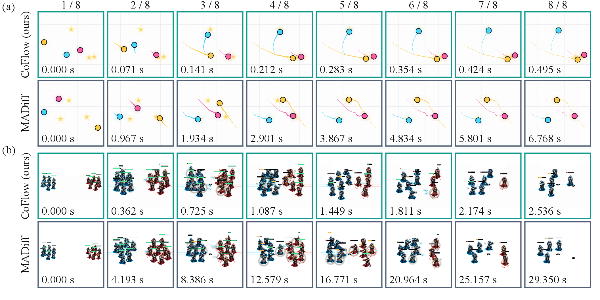
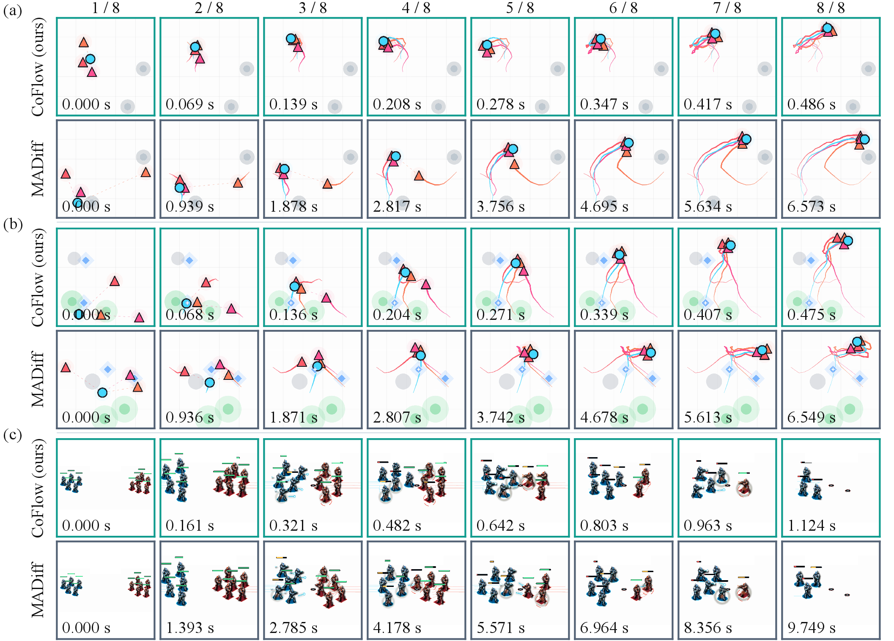

Figure 7. Spread and 8m keyframes with accumulated model-sampling time.

Figure 12. Additional Tag, World, and 5m_vs_6m keyframes.
All seven MPE and SMAC tasks, with the original gallery’s 21 task–quality videos retained. Selected trajectories are shown by default. Playback duration does not measure model inference latency.

